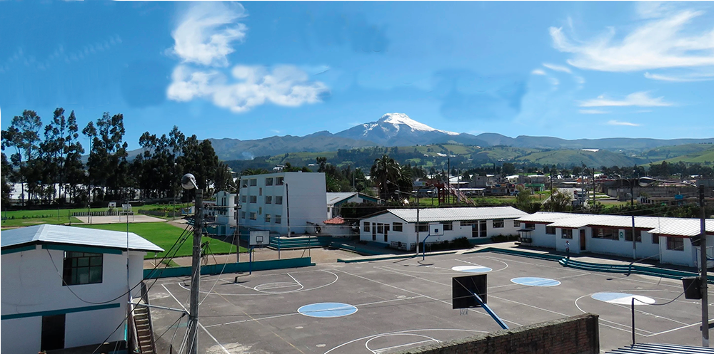

BIENVENIDOS A LA UNIDAD EDUCATIVA "CAYAMBE"
"PASION QUE SE SIENTE"
MISIÓN
Formar con calidad y calidez bachilleres técnicos conscientes de su interculturalidad y con espíritu emprendedor, basados en conocimientos teórico prácticos, principios axiológicos y preservación del ambiente, que les permita incursionar en el campo laboral o continuar con sus estudios superiores para enfrentar con éxito los retos del milenio .
VISIÓN
Constituirse en una institución líder en educación técnica, con identidad propia, recursos humanos de excelencia con un alto nivel de compromiso social tecnología moderna, cumpliendo con todos los estándares de calidad.
OBJETIVOS
Preparar y formar ciudadanos conscientes, con alta calidad científica y técnica; dispuestos a integrarse al proceso productivo poniendo en práctica sus valores físicos, morales e intelectuales, es decir, nuestra Institución entregará profesionales capaces y con sólida personalidad.
Realizado por: Erika Garrido